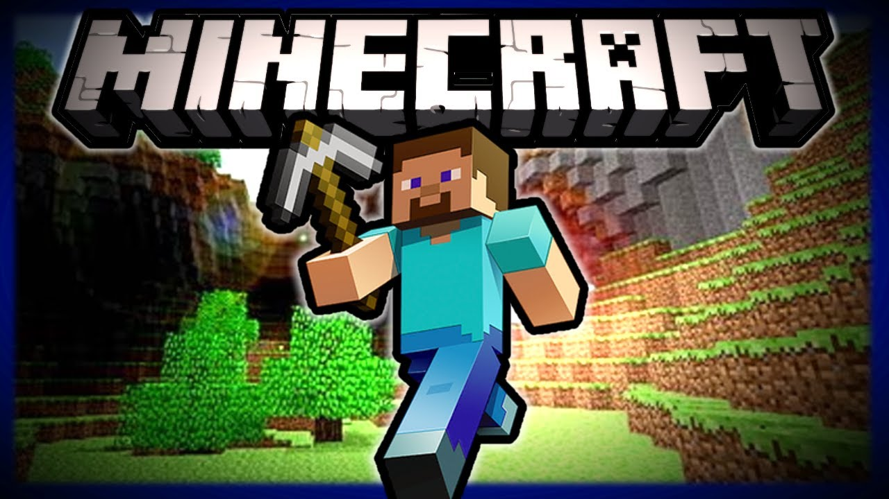

Minecraft
Minecraft é um jogo de mundo aberto onde os jogadores exploram, coletam recursos e constroem usando blocos. O jogo possui modos como Sobrevivência e Criativo, permitindo desde aventuras até construções livres. É um dos jogos mais populares do mundo por sua criatividade e liberdade.

Construções no Minecraft
As construções são uma das principais características do Minecraft. Os jogadores podem usar diferentes blocos para criar casas, castelos, cidades, fazendas e até réplicas de monumentos famosos. No modo Criativo, é possível construir livremente, enquanto no modo Sobrevivência os materiais precisam ser coletados antes da construção. A criatividade dos jogadores torna cada construção única.
🎮 Tipos de Construções
- Casas
- Castelos
- Cidades
- Fazendas Automáticas
- Monumentos Famosos
Curiosidades
- Minecraft é um dos jogos mais vendidos do mundo.
- Possui mais de 300 milhões de cópias vendidas.
- Foi criado por Markus Persson (Notch).
Desenvolvido por: Caio